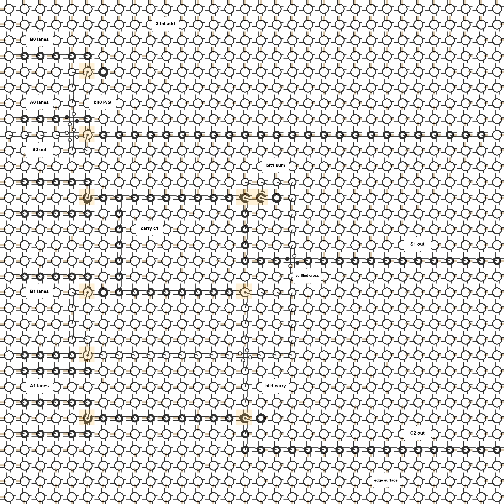
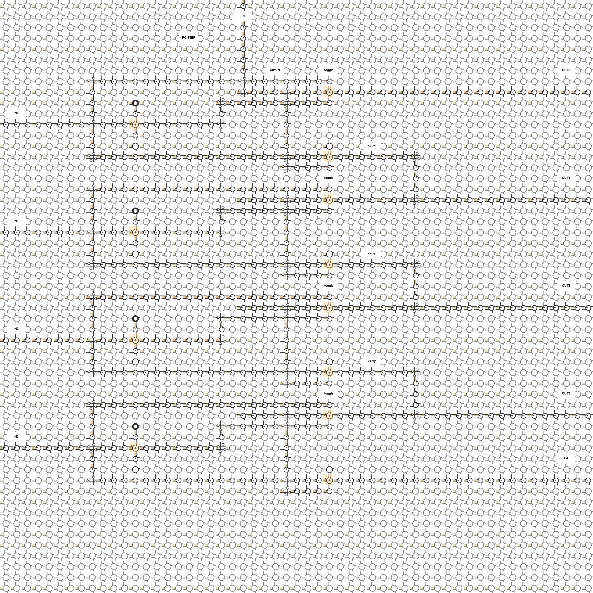
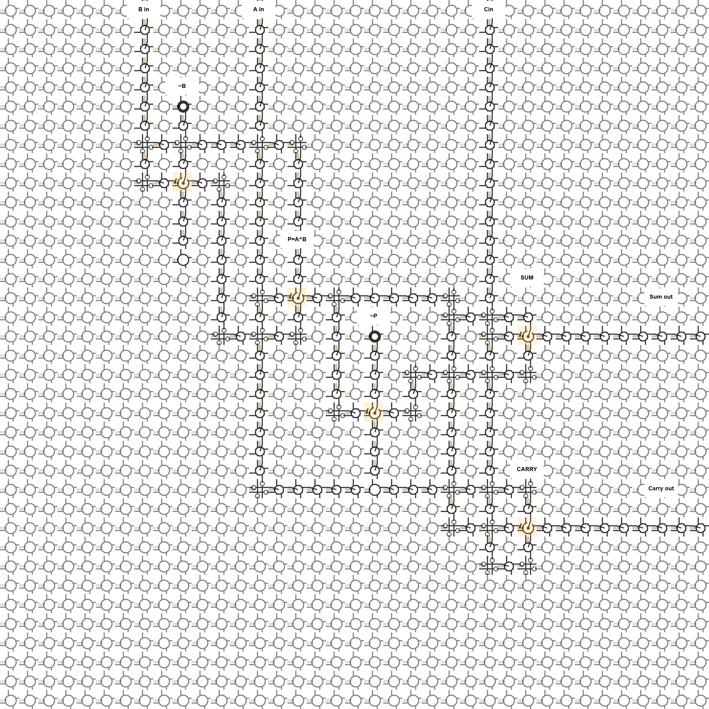
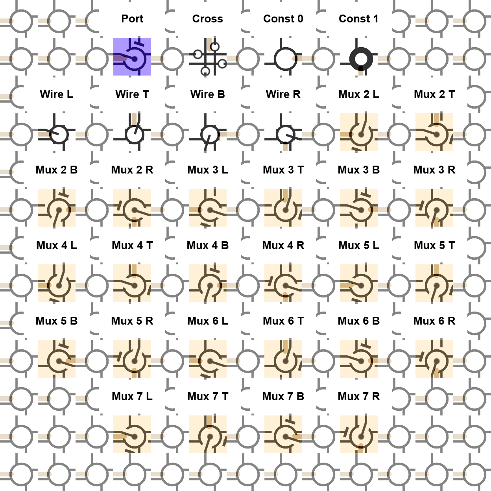
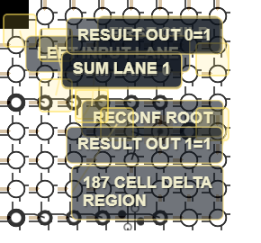
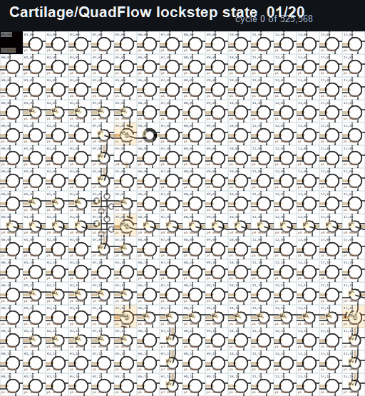
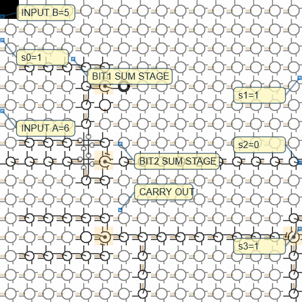

A 32x32 GLSL-rendered Cartilage 2-bit ripple-carry adder generated from QFG source, run for 3072 lockstep updates, and checked with 96 browser expectations passing.

Computational substrates, circuit fabrics, browser-native GPU experiments, magnetic devices, digital radio, and self-assembling hardware ideas.
A 32x32 GLSL-rendered Cartilage 2-bit ripple-carry adder generated from QFG source, run for 3072 lockstep updates, and checked with 96 browser expectations passing.

A withdrawn 55x55 visual placement sketch for a 4-bit conditional incrementer: repeated toggle/carry islands, ordinary edge I/O, and visible carry propagation.

A withdrawn 37x37 visual placement sketch for a full-adder function decomposed into local MUX islands, ordinary wire I/O, constants, and intersections.

A visual decoder for the 32 Cartilage cell-role codes: reconfiguration port, cross, constants, wire orientations, and the six MUX modes in four orientations.

The maker movement can build boards, enclosures, firmware, fixtures, and dense interconnect, but still lacks a civic-scale process for fast, reliable, locally reproducible active devices.
A 1-pin fully digital SDR receiver frontend and a 1-pin resonant-tank transmitter driven by a fully digital SDM Weaver modulator in Verilog, with crude PCB prototypes and FM receive videos.

Using GPT as a structuring tool for real thoughts: not to generate ideas, but to translate rough thinking into clear writing others can read, evaluate, and build upon.
A positive-number serial multiplier built in Logisim. After the pipeline fills, the next pair of bit-serial arguments can enter immediately after the previous pair, with output bits continuing on every clock.
An early public generative Transformer artifact: 4 layers, 16 attention heads, 128-dimensional embeddings, 128-token context, 361-token vocabulary, about 834k parameters, trained past 50,000 iterations until the tiny model produced strange but intelligible stories.
A browser/GPU demo of a tiled computational fabric where regions can instantiate and replace daughter regions through local reconfiguration ports and serial bitstreams.
A full exact-frame browser-fabric run: 64x64 seed fabric, 525,568 committed updates, 525,569 decoded video frames, 7,956 QFG frames, and 704 expectations passing while a ripple-carry adder body is reconfigured from 2 bits to 3 bits and back.

A 20-frame visual timeline from a successful 525,568-cycle lockstep Cartilage/QuadFlow browser-fabric run: 64x64 GLSL fabric, external edge I/O, 7,956 parsed QFG frame declarations, and 704 browser-side expectations passing.

A 257-frame capture of a browser Cartilage fabric computing 6 + 5 through a seeded 3-bit ripple-carry adder body, with QFG source, run reports, manifests, videos, and every committed PNG frame.

A printable reference paper on a multiplexer-only Boolean model of universal computation built from wires, constants, 2:1 multiplexers, feedback, configuration registers, and unbounded tiling.
A step-by-step exploration of the beautiful world of computation, mathematics, physics, and engineering, with browser-native WebGL experiments and runnable code.
Executable WebGL automata exploring reversible routing, information-conservative dynamics, machine-like heat, and organic large-scale patterns.
Magnetic material properties, magnetic amplifier behavior, second-harmonic modulation, and diodeless circuit ideas collected while studying how to build useful circuits without semiconductor fabrication.
Online backpropagation engines wired from primitive operations: multiplication, addition, fan-out, and elementary functions carrying derivative feedback directly through the computation.
A smart-dust substrate proposal using ordinary-fab steps: through-wafer dicing into micrometer-scale chip modules, conformal SiO2 coating, and adjacent capacitive and inductively coupled links for actuation, power, clock, and data transfer.
Dated original posts extracted from the LinkedIn Posts archive: research notes, technical arguments, and invention fragments worth preserving outside the feed.